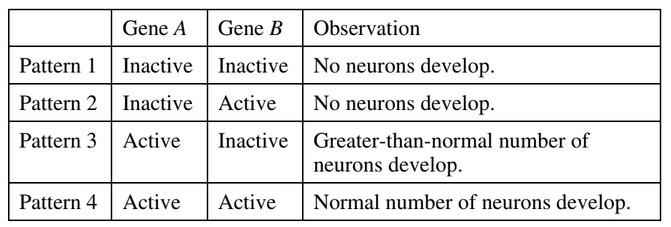

The table below describes the action of two genes involved in the
regulation of nervous system development in the nematode C. elegans.

Which of the following claims is best supported by the data?
When gene \(A\) is not active, as shown in pattern 1 and 2, no neurons develop. Gene \(A\) must control development of neurons.
If gene \(A\) is active and neurons develop, gene \(B\) seems to control the number of neurons.
In pattern 3, when gene \(B\) is inactive, a lot of neurons develop.
In contrast, when gene \(B\) is active, the normal number of neurons develops.
This implies that gene \(B\) is necessary to control the number of neurons. One way to do this is through programmed cell death of excess neuron precursors.
There is no evidence that gene \(A\) depends on gene \(B\) activity. In the chart, gene \(A\) can be active or inactive whether or not gene \(B\) is active.